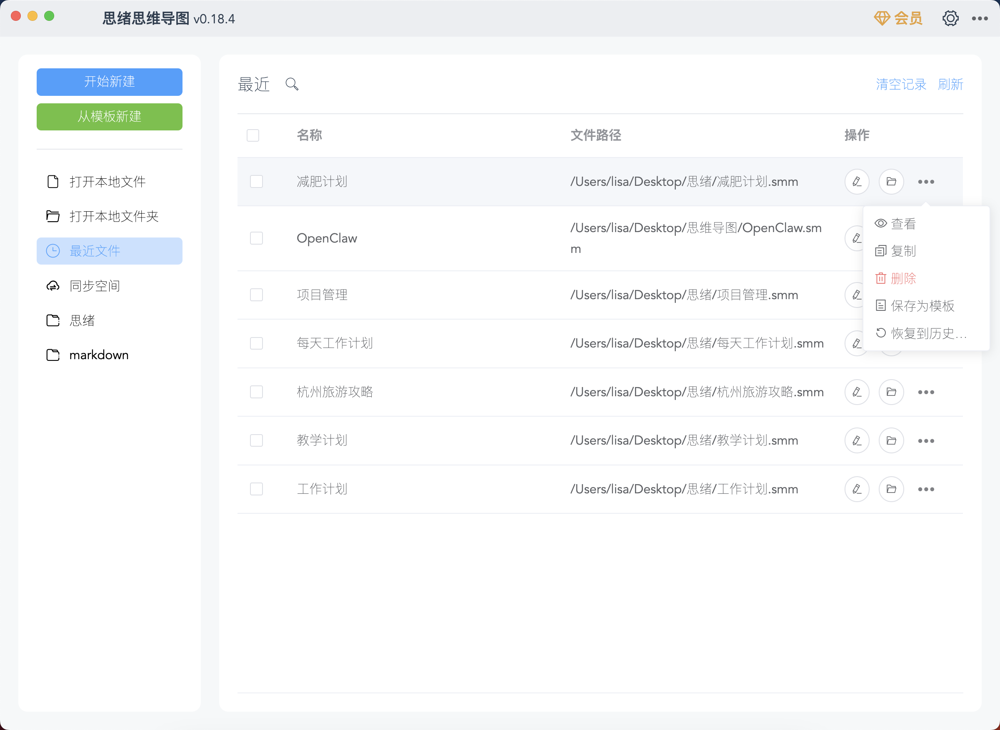
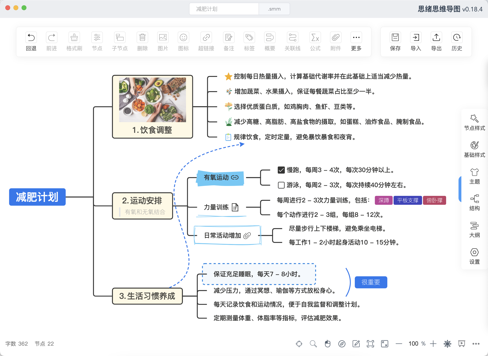
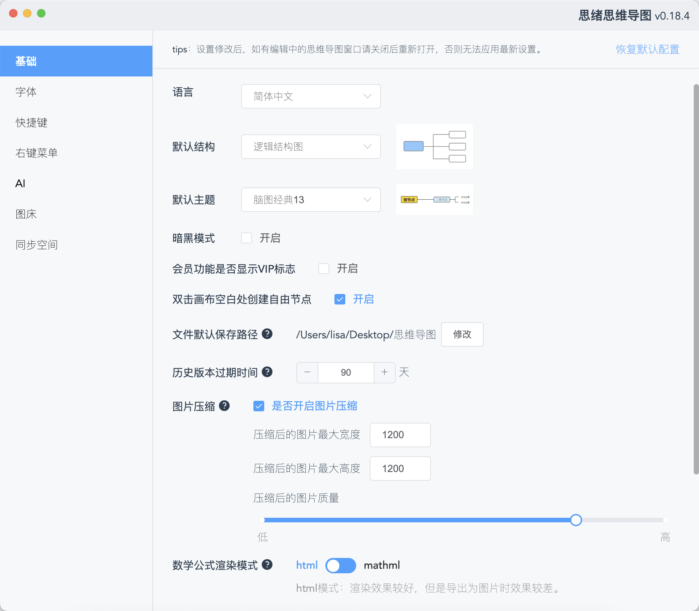
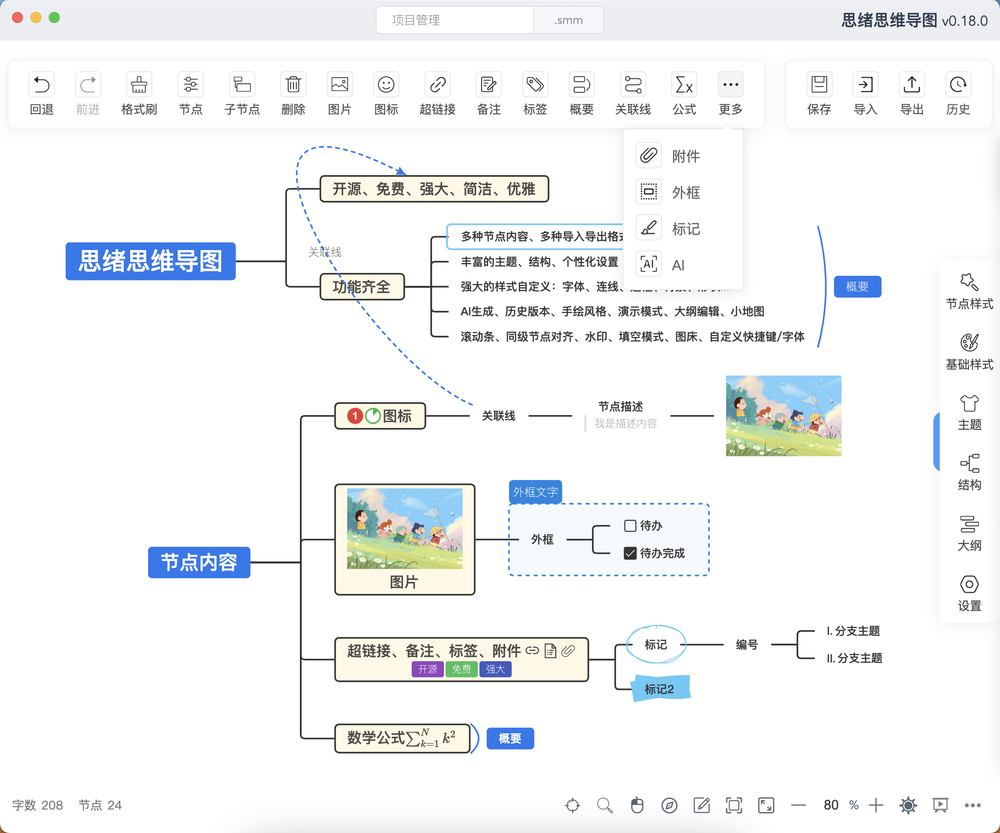
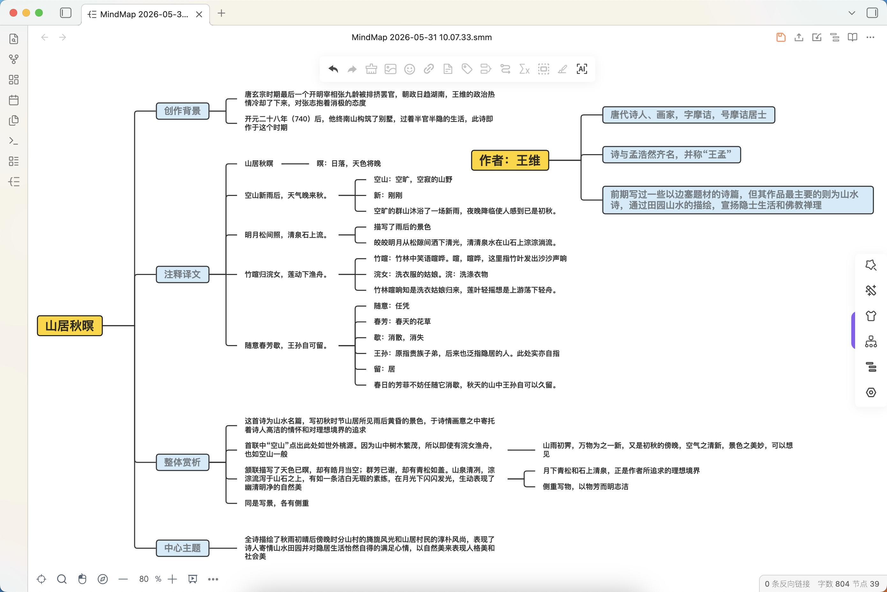
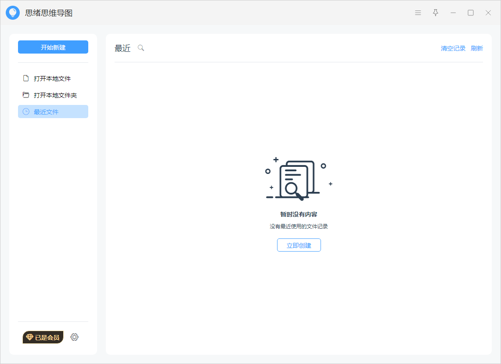
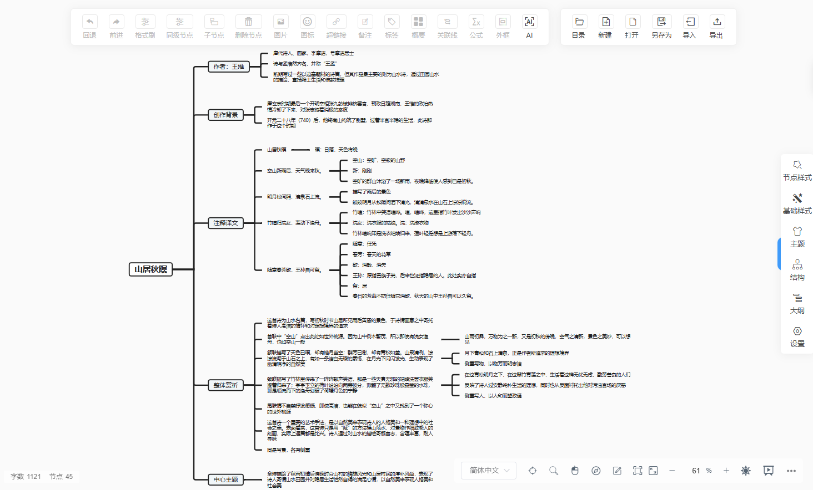

摒弃传统多端，站在巨人之上
大部分功能免费，少数专业功能付费，打造最具性价比思维导图
在你喜欢的平台享受强大的思维导图体验




满足你对思维导图工具的所有期待
本地存储，数据安全有保障。软件无需联网即可完整使用所有功能，你的思绪只属于你。
自定义 AI 模型，支持一键生成思维导图、节点续写、AI 生成主题，打破思维瓶颈。
支持思维导图、逻辑结构图、目录组织图、时间轴、鱼骨图、表格等 15 种丰富结构。
内置上百个精美主题，支持手绘风格、彩虹线条。节点可添加图片、附件、公式、标签等。
支持导入 XMind、Markdown、Xlsx 等；可导出为 PNG、PDF、SVG、XMind、Mermaid、Html 等。
支持配置 WebDAV 协议，轻松实现多设备文件同步，保障数据一致性的同时不牺牲隐私。
支持创建无限数量的文件和自由节点，内置丰富模板，让排版布局不受任何束缚。
历史版本回退、演示模式、填空模式、大纲编辑打印、禅模式、小地图、双向链接等一应俱全。
支持自定义字体、快捷键、右键菜单、图床配置。丰富的设置项打造专属你的工具。
思绪思维导图从一个开源项目成长而来，早期核心库 simple-mind-map完全开源。提供了一个简单、丰富、易用的JavaScript库，以及一个在线版Demo，助你快速实现自己的思维导图产品。
小红书
欢迎进群交流微信公众号
获取最新资讯